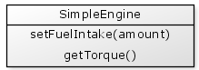

In an object oriented application each object you create should have well defined and narrow focused responsibilities. In other words, each of your objects should have just a single responsibility. If you have an object that performs calculations, database updates, sends emails, imports data and performs logging, then this is a good candidate for breaking down into separate objects each with more narrow focused responsibilities. However, once you have separated your objects in this way you still need a way of combining them so they can work together.
Let's consider a simple example where you are designing an application that represented cars with engines. We may have two objects as follows:
The applyPressureToAcceleratorPedal() function takes an amount of pressure argument which causes the speed of the car to change. The getCurrentSpeed() function returns the current speed.

The setFuelIntake() function opens the fuel valve to accept more or less fuel based on the amount specified. The higher the value, the higher the torque of the engine.
Let's make a first attempt at how our Car might be implemented
{% highlight cfm %}So to use our car object we may write some code such as:
{% highlight cfm %}In this simple example we have only two objects that are required to work together; our car and our engine. The car on it's own does not know about the internal workings of an engine so it needs an engine object to perform "engine" type tasks. In other words the car object is dependant on the engine object and cannot function without it.
You will notice that when using this approach the Car needs to know how to create the Engine object. In this example the Engine object does not need any parameters passed to it's init() function, but if the Engine was changed so that it did need some initialisation parameters then we would also need to update our Car object accordingly.
In object oriented design the more one object needs to know about another object the more "tightly bound" they are together. This increases the likelihood that if one object needs to be changed (e.g. the Engine) then the other object will also need to be changed (e.g. the Car).
This measure of how tightly bound objects are to one another is called coupling.
High coupling between two objects means the objects know a lot about each other. For example one object may call a function on another object that in turn returns a struct. The first object would need to know the details of each of the struct members to be able to use the returned value.
Low coupling means objects need to know very little about each other. For example one object may simply ask another object to perform a task and there is no return value. The first object has a lower coupling to the second object compared with the previous example that returned a struct.
Low coupling leads to more maintainable systems because it reduces the likelihood of a change in one object having an effect on other objects.
In our car example, the Car knows the details of how an Engine object is created. As mentioned above, this could lead to changes in the engine requiring changes to the car as well, which is a situation we would like to avoid.
Let's change our Car slightly and have the Engine provided to the Car in the init() function rather that having the Car create the Engine.
{% highlight cfm %}